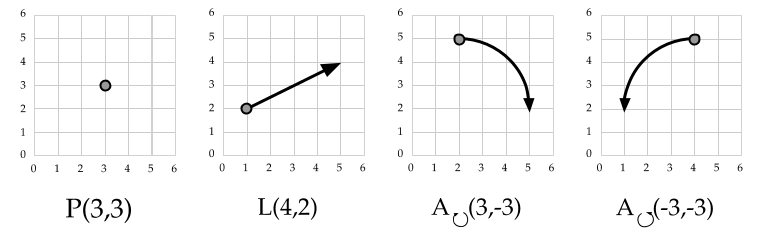
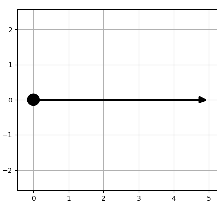
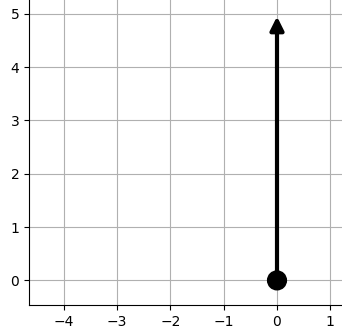
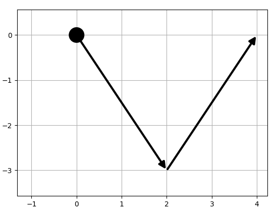
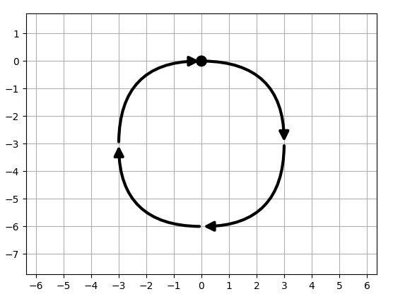
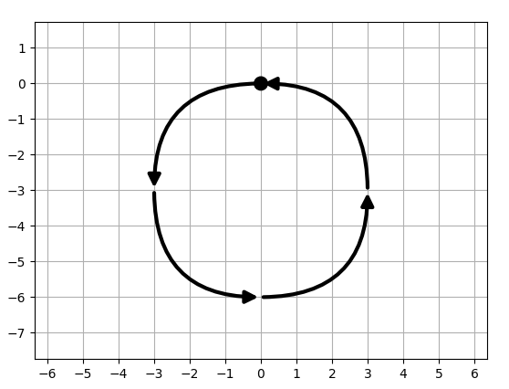
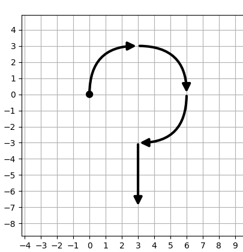
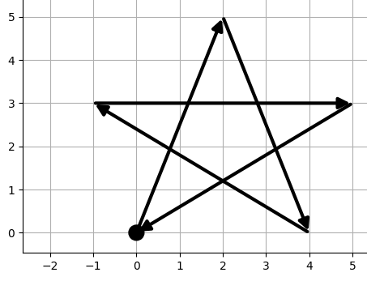

Recognizing gestures with Deictic
Deictic exploits a combination of declarative gesture modelling (i.e. through expression) and Machine Learning for supporting a robust but rapidly configurable gesture recognition. The developer models the stroke gestures through expression composing simple 2D geometric primitives. The underlying recognition engines creates the classifier and trains it generating the gesture samples from the those collected for the geometric primitives and shipped with the library. During the recognition, it provides information on the recognition of the whole gesture and its sub-parts as defined by the gesture expression.
In this test, the class Input.Deictic object provides a simple API for defining and recognizing gestures with the Deictic approach. Please note that the recognition is currently performed at server-side for technical reasons.
Defining the gesture models
Defining gestures stroke with Deictic requires using a simple expression language. The basic ingredients are a set of simple geometric primitives, depicted in the following figure (please note that the Y positive direction is up, as in Cartesian coordinates and opposite to the screen coordinates). A graphical modelling editor for the expressions is available.

- A 2D point, denoted as
P(x,y)wherexandyare its coordinates. It represents the starting point of a stroke. - A 2D line, starting at the end of the previous primitive and moving
dxalong the X axis anddyalong the Y axis, denoted asL(dx, dy). It represents a movement along a linear path. - A 2D arc, starting at the end of the previous primitive, moving
dxalong the X axis anddyalong the Y axis, clockwise ifcw === trueor counter-clockwise ifcw === false. An arc is denoted asA(dx, dy, cw). It represents a movement along a curved path, clockwise or counterclockwise.
Starting from these primitives we can obtain complex gestures composing them through the following operators:
- A sequence, represented by the symbol
+, indicating that the the user has to complete first the left operand and then the right one.A + Bdenotes that, for completing the gesture, the user has first to performAand thenB - A choice, represented by the symbol
|, indicating that the user has to complete either one operand or the other.A | Bdenotes that, for completing the gesture, the user may perform eitherAorB - A parallel execution, represented by the symbol
*, indicating that the user has to complete either both operands at (nearly) the same time.A * Bdenotes that, for completing the gesture, the user has to perform bothAandB
A stroke always stars with a point. Then, it continues along a linear (line), curved (arc) or mixed (both of them) path. A multi-stroke gesture (e.g. performed with more than a finger) contains two or more point primitives.
Please note that only the relative sizes among the primitives influence the recognition, since the dimensions are
normalised by the underlying engine.
Therefore the gesture P(0,0) + L(0,1) + L(1,0) is equivalent to P(0,0) + L(0,5) + L(5,0), but it is different from
P(0,0) + L(0,1) + L(5,0), since the movement on the X is 5 times the one on the Y.
The following are some modelling examples.
-

Horizontal line:
P(0,0) + L(5, 0) -

Vertical line:
P(0,0) + L(0, 5) -

V:
P(0,0) + L(2,-3) + L(2,3) -

Clockwise circle:
P(0, 0) + A(3, -3, true) + A(-3, -3, true) + A(-3, 3, true) + A(3, 3, true) -

Counter-clockwise circle:
P(0, 0) + A(-3, -3, false) + A(3, -3, false) + A(3, 3, false) + A(-3, 3, false) -

Question mark:
P(0,0) + A(3,3, true) + A(3,-3, true) + A(-3,-3,true) + L(0,-4) -

Star:
P(0,0) + L(2,5) + L(2, -5) + L(-5, 3) + L(6,0) + L(-5, -3)
Deictic initialization
The Input.Deictic class allows defining the gestures used in the application through the expression described in the previous section. At the initialization step, we specify the expressions as string in the configuration object (an array of Input~DeicticGesture), providing a name for each of them. The following code initializes a Input.Deictic with the V and the counter-clockwise circle from the examples above. Internally, the function communicates with the server-side part and automatically trains the recognizer according to the gesture set. This step may take some time to complete (5-6 seconds).
A graphical modelling editor for the gesture expressions is available.
var deictic = new Input.Deictic();
// configures deictic for recognizing a V and a circle gesture (counter-clockwise)
deictic.init([
{name: 'V', model: 'P(0,0) + L(2,-3) + L(2,3)'},
{name: 'circle', model: 'P(0, 0) + A(-3, -3, false) + A(3, -3, false) + A(3, 3, false) + A(-3, 3, false)'}
]);Gesture recognition
Once the initialization, the deictic object is able to evaluate the stroke performance, assigning probabilities to
both the recognition of the entire gesture and of its sub-parts. In order perform this evaluation, we
call the eval method, which requires the entire history of the stroke. When we use the Input.Deictic class
in combination with the Input.StrokeInput, we need only to access the event.d.buffer array.
// When receiving an update from the StrokeInput input,
// we evaluate it with Deictic. The object input is an
// Input.StrokeInput instance.
input.onStrokeChange.add(function (event) {
var result = deictic.eval(event.d.buffer);
// check the probability of the second part of the V gesture
var prob = 0;
for(var i in result){
var gesture = result[i];
if(gesture.name === 'V'){
prob = gesture.parts[1].probability;
}
}
});The result returned by the evaluation method is an array of Input~DeicticEvaluation objects. Each entry
has two properties:
- a
namethe name a gesture, as specified in theinitmethod - a
partsarray, that contains the probability associated to each gesture part. Each element of this array contains:- the part
name, corresponding to the expression corresponding to the sub-part - the
probability, corresponding to the recognition likelihood associated to the the sub-part
- the part
The following is a sample dump of a possible eval output. Please notice that:
- The parts are ordered according to the temporal sequence used in the gesture definition.
- The probability of the recognition of an entire gesture is specified in the last entry of its parts array.
- During the recognition, the probability of a given part (e.g. the first of the V gesture), may be higher than the the entire gesture recognition probability. This means that the underlying recognition algorithm believes that the user is performing an intermediate part of the gesture.
[
name: 'V', parts: [
{name: 'P(0,0) + L(2,-3)', probability: 0.33},
{name: 'P(0,0) + L(2,-3) + L(2,3)', probability: 0.75}
],
name: 'circleCw', parts: [
{name: 'P(0, 0) + A(3, 3, true)', probability: 0},
{name: 'P(0, 0) + A(3, 3, true) + A(3, -3, true)', probability: 0},
{name: 'P(0, 0) + A(3, 3, true) + A(3, -3, true) + A(-3, -3, true)', probability: 0},
{name: 'P(0, 0) + A(3, 3, true) + A(3, -3, true) + A(-3, -3, true) + A(-3, 3, true)', probability: 0},
]
]In many cases, we consider as the recognized gesture the one having the higher probability. In addition, we threshold
its probability value in order to avoid low values. For instance, if the maximum probability is 0.25 we consider the
not recognized. The Input.Deictic object provides the recognizedGesture utility method for searching
the maximum probability and threshold it. The method takes as input the object returned by eval.
// get the most likely gesture at the end of the stroke performance.
// input is an Input.StrokeInput instance
input.onStrokeEnd.add(function (event) {
var gesture = deictic.recognizedGesture(deictic.eval(event.d.buffer), 0.70);
});